Halloween time! This update focuses on stats and match analysis. You can now check builds, stats and the map from the Match Library, watch highlights, and look closely at what happened during a spike.
We want these tools to help guilds review their matches. Tell us what you miss, what is hard to understand, or which numbers look wrong.
Aggressiveness replaces Lord Damage. We completely reviewed the Aggressiveness calculation, based on match history and rules discovered by the community. It shows each team’s live score for the 28:00 lord damage tiebreak and what contributes to it.
If neither Guild Lord dies, a GvG ends at 28:00 and the team with the higher score wins. The game calls it aggressiveness. The server never shows the score, only the winner, so every rule below was tested against real results: a rule stays only if it picks the right winner in more matches than the other ideas.
We ran our Aggressiveness model on all 161 recorded matches that ended at 28:00 since March 21, 2026. It found the right winner for 160 of them. This is our best model so far: every other version we tested (Entourage damage counted in full or not at all, a 10-second Entourage, 30 per block, healing taken off the score, the number of pit NPCs) picks the wrong winner in more of these matches.
One score per team. A + adds points to the team that did it. A − takes points off that same team. Nothing is ever taken from the other team.
Each team's live tiebreak score, with what counts for it. View full size
How the score works
Your score=
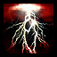
Damage on the enemy lord+20%of damage under Entourage+30per
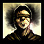
blind miss+20per
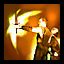
block−50perenchant orweapon spell on your own lordor300while its Entourageis up
Worked example
Red attacks Blue's lord for the whole match. This is Red's score; Blue's is counted the same way, on Red's lord.
Red's hits on Blue's lord, outside Entourage
+1,700
50 damage that got through Blue's lord's Entourage (most hits did 0), counted at 20%
+10
5 Red attacks blocked by Blue's Protector's Defense
+100
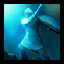
2 Guardians Red's monks cast on Red's own lord after Red's pit fell (no Entourage, so 50 each)
−100
Life stolen from Blue's lord
0
Red's score
1,710
What scores for you
Damage on the enemy Guild Lord
+1 per pointConfirmed
Every point of damage your team deals to the enemy lord adds one point: normal hits, critical hits and armour-ignoring damage, from the first minute to the last. Damage his Amulet of Protection heals right back still counts.
Lightning Strike hits the enemy lord for 54+54
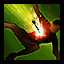
A ranger's arrow lands for 38, then a 52 critical+90
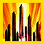
A warrior's Hundred Blades hits the lord for 22+22
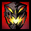
A 300-damage spike early in the match: his Amulet of Protection lets only part of it through each second and heals the rest back. The whole spike still counts+300
Why: official rule (2008 update); holds in every recorded 28:00 match.
Damage while the enemy lord has Entourage up
+20% of itMeasured
Entourage is the Guild Lord's own shield. He can only cast it while his pit NPCs outnumber the attackers in the pit; pets, spirits and minions don't count as attackers. In our 165 recordings it lasts about 10.5 seconds: three hits out of four on him do 0 damage, and the ones that land do about 30 at most. Armour-ignoring damage still gets through. Hitting a lord behind his Entourage is not a way to farm the score.
A Lightning Strike that gets through for 30 under Entourage (most hits do 0)+6
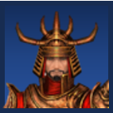
Kill or pull pit NPCs until your attackers outnumber them: Entourage stops and hits count in full againfull value
Why 20%: counting the little damage that gets through at 20% predicts the right winner in 160 of the 161 recorded 28:00 matches. Counting it in full predicts the wrong winner in 3 of them, and not counting it at all in 2. Only one or two matches separate these choices, so this is the least certain rule of the model.
Why 15 seconds: community testing found that Entourage lasts 10 seconds, not the 15 its description says, and the recordings agree: hits go back to full damage about 11 seconds after each cast. Yet scoring each cast over 15 seconds keeps the right winner in 160 of 161 matches, while 10 or 11 seconds gets 2 to 4 wrong. So either the reduced scoring outlasts the shield, or the model is making up for something else. An in-game test would settle it.
Your attack misses or is blocked
+30 blind · +20 blockConfirmed
An attack on the enemy lord that misses under blind scores 30 for the attacking team, and one that is blocked scores 20. The team that blocked loses nothing for the block itself. ArenaNet counts defences stacked on a lord as aggression by the other team, so turtling your lord can't win the tiebreak.
Blocking still helps the defender against big hits: a blocked 60-damage attack gives the attacker 20 instead of 60. What can cost the defender is how they block: Guardian cast on their own lord is an enchantment on him, so it costs them −50 per cast.
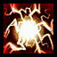
Your warrior is Blinded by Blinding Flash and misses the enemy lordyou +30
Their monk's Protector's Defense (a stance on the monk) blocks your 60-damage hityou +20 · them 0
Guardian cast on their lord blocks ityou +20 · them −50 per Guardian
Why: in a controlled community test, one blind miss tied with 30 damage. A blocked attack scores 20, which fits the recordings; 30 or more per block predicts the wrong winner in more matches.
The enemy lord's maximum Health
No effect on the scoreMeasured
The lord's maximum Health is 1,680, plus 1% for each morale boost his team has earned (up to 1,848), minus 100 while he is Deep Wounded. This does not change anyone's score: a 54-damage hit counts 54, whatever his maximum. Morale boosts only make your lord harder to kill.
We need it to read the hits correctly: the recording gives each hit as a share of the lord's Health, not in points. With the wrong maximum, every hit on a boosted lord would be read up to 10% too low.
Blue earned 5 morale boosts: their lord has 1,764 Health. A 54-damage hit is recorded as 3.1% of it, and still counts 541,764 HP
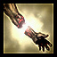
The lord is Deep Wounded: 100 less maximum Health while it lasts−100 HP
Why: measured on 96,000 health readings of Guild Lords.
What costs you
Enchanting your own lord
−50 · −300 under EntourageConfirmed
Every enchantment your players cast on your own Guild Lord takes 50 points off your score, and 300 if it lands while his Entourage is up: while his pit NPCs are alive and outnumber the enemy players in the pit. Once that can no longer happen (pit dead, or enough enemies inside) it's back to 50.
Guardian on your own lord after your pit is dead (each attack it blocks still gives the enemy +20)−50
Life Sheath on your own lord while his Entourage is up−300
Why: controlled community tests. With a live pit, 300 damage plus one Vigorous Spirit or Patient Spirit on the dealer's own lord tied with a team that did nothing, and two spirits needed 600. With the pit dead, 50 damage plus one Patient Spirit tied.
Weapon spells on your own lord
−50 · −300 under EntourageConfirmed
Ritualist weapon spells count like enchantments.
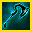
Spirit Light Weapon on your own lord−50
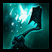
Weapon of Warding on your own lord while his Entourage is up−300
What doesn’t count
Life steal
0Confirmed
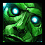
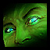
Angorodon's Gaze or Vampiric Gaze steals 40 Health from the enemy lord0
The stolen part of a vampiric weapon's hit (the hit itself still counts)0
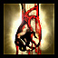
Degeneration
0Confirmed
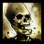
Bleeding or Poison ticking on the enemy lord (a hex that deals real damage each second, like Illusion of Pain, does count for that damage)0
The enemy healing his lord
No effectMeasured
Healing never lowers your score. The damage you dealt still counts even if it is healed right back.
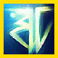
Their monk heals the lord for 120 right after your 120-damage spikeyour +120 stays
His Amulet of Protection heals back what goes over its cap (25 damage per second at the start, rising to 300 by 12:00)your damage stays
Why: subtracting healing from the score predicts the wrong winner in 2 more matches.
How many pit NPCs are alive
No direct effectMeasured
The Bodyguard, Knights and Archers only matter by letting their lord cast Entourage (more NPCs alive than attackers in the pit). Through Entourage they decide whether an enchantment on your own lord costs 50 or 300, but their number doesn't scale anything: one team won after 6 Guardians on its own lord with 4 pit NPCs alive and no Entourage.
The Bodyguard’s Health
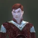
The Bodyguard has 521 Health, not 480
521 HPConfirmed
The wiki gives the Bodyguard 480 Health, like the Knights, Footmen and Archers. He actually has 521, and 421 while Deep Wounded. The other pit NPCs do have 480.
Controlled test: 10 Vampiric Gaze at Blood Magic 12 steal 52 each, 520 in all. The Bodyguard survives the tenth with Health to spare; a spear attack has to finish him521 HP
Deep Wounded, he drops to 421 (Deep Wound takes 20%, at most 100)421 HP
Why: the game sends each hit as a share of the target's maximum Health. On the Bodyguard, every 52-point steal of the test read 0.099808, which is exactly 52 ÷ 521 (52 ÷ 480 would be 0.108333). The same holds for all 3,403 hits and heals on Bodyguards in 54 recorded matches: every one is a whole number of Health out of 521, and none out of 480.
Why it matters here: killing the Bodyguard is part of breaking a lord's pit, and so his Entourage. Plan for 521 damage, plus whatever he regenerates while you work on him: in the test he got back about 13 Health between casts.
How sure we are
Confirmed
ArenaNet's own rules, and the recordings agree.
+1 per point of damage on the enemy lord2008 update; whole match, all hit types
−50 per enchantment or weapon spell on your own lord, −300 under Entourage2008 update; community controlled tests
+30 per blind missOfficial wiki; a community test tied one blind miss with 30 damage
Life steal and degeneration count 0Official wiki, Aggressiveness page
The Bodyguard has 521 Health, not the wiki's 480Controlled Vampiric Gaze test, and 3,403 recorded hits
Measured
The 2010 update named these without numbers; the numbers come from recorded winners.
Damage under Entourage counts 20%15 to 25% fits best; 0% and 100% miss 1 or 2 more matches
+20 per blocked attackFits the recordings; 30 and up doesn't
Lord Health: +1% per morale boost, −100 Deep Wounded96,000 health readings
Healing and the NPC count change nothingEach alternative predicts the wrong winner in more matches
Still open
Is it the running Entourage, or the NPC head count, that makes it −300?The tests had both true or both false. To split them: let enemy players walk into your pit until they outnumber your living pit NPCs, then enchant your own lord within a few seconds, while his last Entourage is still running. −300 means the running shield decides; −50 means the head count does.
Flux damage on a lordFor example Minion Apocalypse: the recordings can't tell whether it counts.
One recorded matchNo rule explains it: the winner did less damage.
Match Library
Match Details now has three tabs: Overview, Stats and Map. You don’t need to open the replay to use them. If the match is only in the cloud, it downloads and loads in the background.
Overview
Hover a player’s name or profession icons to see their build and attributes. Click the profession icon to keep the build open. You can copy one template or all eight builds from a team. Copied templates now include the attribute points we found, and we fixed some templates that Guild Wars refused to load.
The Map tab, with the timeline at the bottom. Drag over a fight to select it. View full size
Stats
Stats are available in the Library and in the replay. Each row is a player, and you choose which stats to show.
There are around 90 stats, including damage, healing, interrupts, knockdowns, fake casts and reaction times. You can sort by any column, show totals or values per minute, and save your favourites. Hover a stat to see what it means.
Look at the full match, select one fight, or step through key moments you would like to analyse. Move the handles on the timeline to choose exactly the part of the match you want.
Pick your stats on the left, star your favourites, and choose the time on top or with the timeline handles. View full size
When a replay is open, the Library stats follow its current time. Clicking the Library timeline also moves the replay.
The idea is to be able to check the statistics and the replay on two different screens. If you have only one, don’t worry, the Stats panel is also accessible in the Replay window. We thought it was less convenient to look at it in the replay, due to all the panels already there.
The Library stats follow the open replay. Clicking the Library timeline moves the replay. View full size
Breakdown
The Damage & Healing window is now called Breakdown.
Click a damage, healing, prevention or interrupt number in Stats to see the details: which skills, on which targets, and what was interrupted. Breakdown uses the same time range you selected in Stats.
Pet, spirit and minion damage now counts for its owner.
Neutral damage, such as map effects or flux (coral, acid traps, miasma, catapults...), has its own totals.
Breakdown of one player: each skill, on which targets. View full size
Combat Log
The Combat Log has been rebuilt as it was outdated. It was originally a debugging tool and never got the attention it deserved. Some colour coding and missing stats were creating confusion.
Interrupts now show who caused them and with which skill. Knockdowns show their cause too. A cast stopped by a knockdown counts as an interrupt, like on the cast bars.
Cancelled casts appear in grey. Successful fake casts appear in gold. Hits and heals affecting several targets are grouped into one row that you can open (e.g. Healing Burst).
You can filter by event type, team or skill, and resize the columns.
An interrupt with its cause, a fake cast in gold, and a heal on several targets grouped in one row. View full size
Piano Roll
Another existing panel, widely reworked. The target is to show the succession of skills during the fight.
The Piano Roll shows players’ casts next to each other on a timeline. Use it to check the timing of a spike and see how the Monks reacted.
A bar at the top marks every detected spike: three or more enemy damage skills hitting one player within 1.5 seconds is considered a spike. Select a spike to see each hit, total damage, lowest health and each Monk’s response. You can also see how much the protection skills helped (e.g.
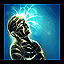
Spirit Bond).
Select several players with Ctrl+click to compare their casts, casts received, or both. Use “Find a skill” to look for a specific skill: its casts get a gold frame on the roll, and the arrows step through its uses. Zoom in/out with the mouse wheel.
In the example below (Crew vs Men, mAT semi-final), four hits land on Il Sync Il in 0.27 seconds. Spirit Bond and Protective Spirit came late: they landed after all the damage arrived, so they could not stop this spike. On the roll you see it at once: their arrows reach the target after the hits.
Crew vs Men, mAT semi-final: four hits on Il Sync Il in 0.27 s. Spirit Bond and Protective Spirit came after all the damage arrived. View full size
Highlights
Highlights mode J
New panel for those who want to only see the important events of a match. Press J or click the Highlights button to watch deaths, spikes, interrupt pressure and flag returns.
The replay slows down during the action and speeds up between moments, or skips straight to the next one. The camera follows the target. If two moments happen in different places at the same time, the screen splits in two.
You can still move the camera yourself. Use Page Up / Page Down to jump between moments, and export one highlight or all of them as a GIF.
Two moments at the same time: the screen splits in two. View full size
Other changes
Replay
Party windows can now show morale and effects beside each player. Click the sparkles button in the party window’s title bar to turn it on. The Guild Lord and Bodyguards always stay visible under Allies.
Cast Strip shows the followed player’s casts and incoming casts beside the skill bar. Enable it in Panels > Cast Strip.
The followed player’s damage now appears in yellow above their targets, like healing already did.
Party window: a dead player now shows 0 / their maximum Health (e.g. 0/530) instead of an empty Health text.
Up and Down arrows move the replay by 30 seconds.
Characters now leave footprints on the terrain (only on the High graphics setting).
The Guild Lord and his guards in their Halloween disguise. View full size
Fixes
This update includes many fixes to health, energy and attribute estimates. Here are the skills whose rules changed.
Energy
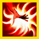
Star Burst: gives 2 Energy for each foe it hits.Before: no Energy was given back.
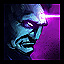
Price of Pride: drains Energy only when its target uses an elite skill.Before: the Energy loss was taken every time the hex landed.
Song of Power: gives Energy regeneration to every ally in earshot until their next skill.Before: only the Paragon got it, for the full duration.
Energy gains checked against the skill descriptions (PvP versions). These skills now give the caster their Energy: a fixed amount, or an amount per ally nearby, per condition, per foe hit, per critical hit...
Before: their Energy gain was not counted at all (Blessed Signet always gave its maximum), so these players showed too little Energy.
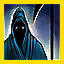
Zealous Benediction
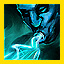
Caretaker's ChargeSoothing Memories
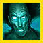
Clamor of Souls
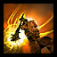
Renewing Smash
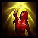
Leader's Zeal
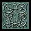
Blessed Signet
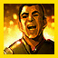
"Victory Is Mine!"
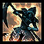
Zealous Sweep
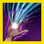
Energy Drain
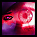
Critical Eye
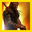
Warrior's Endurance
A gain with a condition (on hit, on a hexed foe, below 50% Health...) now counts only when the condition was really met, and a gain meant for allies no longer goes to the caster.
Before: it was given on every cast.
Skills that make other skills cost less Energy (for example Soul Twisting for Binding Rituals, Divine Spirit for Monk spells) now apply their discount:
Before: the discount was ignored, so the next skills were counted at full cost.
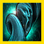
Soul Twisting
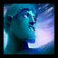
Divine Spirit
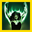
Cultist's Fervor
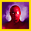
Way of the Empty Palm
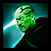
Jaundiced Gaze
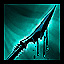
Renewing Memories
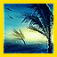
Air of EnchantmentEnergizing ChorusEnergizing WindRoaring WindsPrimal Echoes
Effects
Angelic Bond: now on every ally in earshot, and ends on all of them when it saves someone.Before: shown on the Paragon only, for its full 10 seconds.
"Brace Yourself!": shows on the right ally and ends when it is triggered. Its damage is now counted too.Before: shown only when it stopped a knockdown (about 1 cast in 40), and its damage had no skill icon.
Grapple: ends all the user’s stances.Before: stances like Frenzy or Primal Rage sometimes stayed on.
Shame: ignores spells without a target and cancelled spells.Before: Shield Guardian, Divine Healing or a cancelled spell triggered the Energy loss.
Mystic Corruption: Disease duration doubled when the caster is enchanted, as in the PvP description.Before: the Disease showed only half of its real time.
Peace and Harmony: 1 to 3 seconds, as in the PvP description.Before: it could show for up to 20 seconds.
Effect end fixed to follow the PvP descriptions (ends on hit, on next skill, on renewal...):
Before: they stayed on for their full duration.
Soul TwistingSpirit BondEnraging ChargeCharging StrikeKeystone SignetEscapeGlyph of SacrificeKinetic ArmorLyssa's Aura
Attributes and Health
"To the Limit!": added to the maximum Health estimate, and used to read Tactics.Before: its extra Health was taken as armour runes, so some players showed wrong maximum Health.
Mending Touch: read for each heal that lands, so it no longer inflates Divine Favor.Before: its heals could read as Divine Favor 8 on a Monk with none.
Star Burst: Fire Magic read from the length of its Burning.Before: Star Burst did not help to read Fire Magic.
Angelic Bond: its save heal is used to read Leadership.Before: not used.
Symbol of WrathBalthazar's AuraRay of JudgmentKirin's Wrath
These Smiting skills are now read cast by cast, which fixes the Smiting Prayers, Protection Prayers and Divine Favor of Smiting Monks.
Before: they were read from one merged line that often held another aura’s damage.
Bodyguard maximum Health is 521, not 480.
The Guild Lord’s maximum Health goes up with his team’s morale boosts.
Fixed wrong damage numbers after a weapon swap or under Deep Wound (e.g. Word of Censure, Energy Burn).
An attribute a player’s professions cannot have is read as 0 (e.g. a Sprint on a Ranger/Warrior lasts 8 seconds).
Damage numbers
"Fear Me!": no longer takes damage numbers that were not its own.Before: the Warrior’s own hits at the same moment could show the “Fear Me!” icon.
Power Leak: no longer takes damage numbers that were not its own.Before: the Mesmer’s other damage at the same moment could show the Power Leak icon.
Grenth's Aura: Health steal now named, at the solved attribute rank.Before: the steal had no skill icon.
Avatar of Grenth: Health steal now named, at the solved attribute rank.Before: the steal had no skill icon.
Other fixes
Fixed spirits and minions sometimes not appearing.
Spiked Coral is now named correctly in the Combat Log.